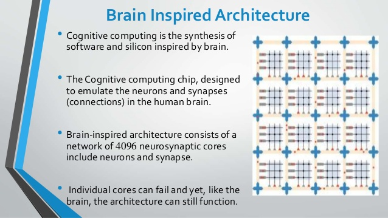
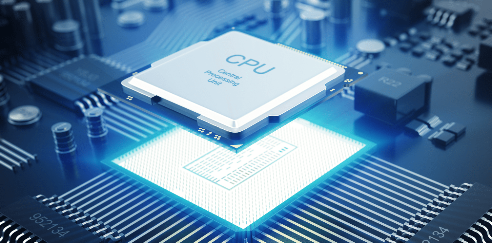
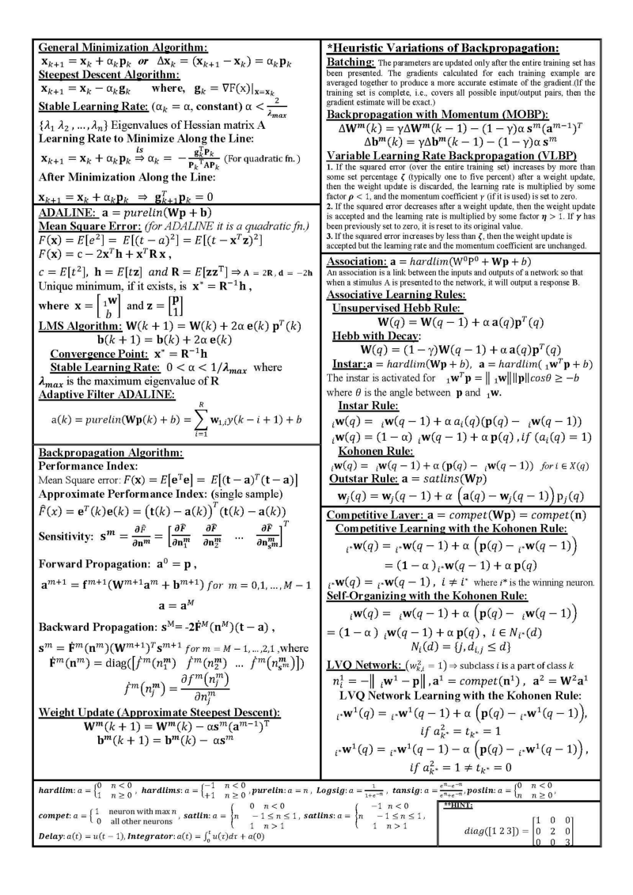
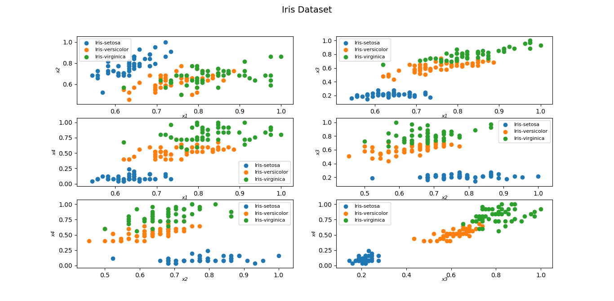
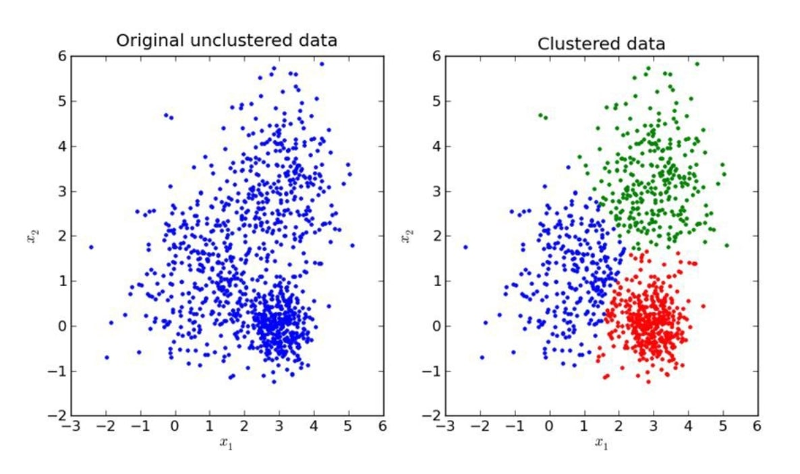
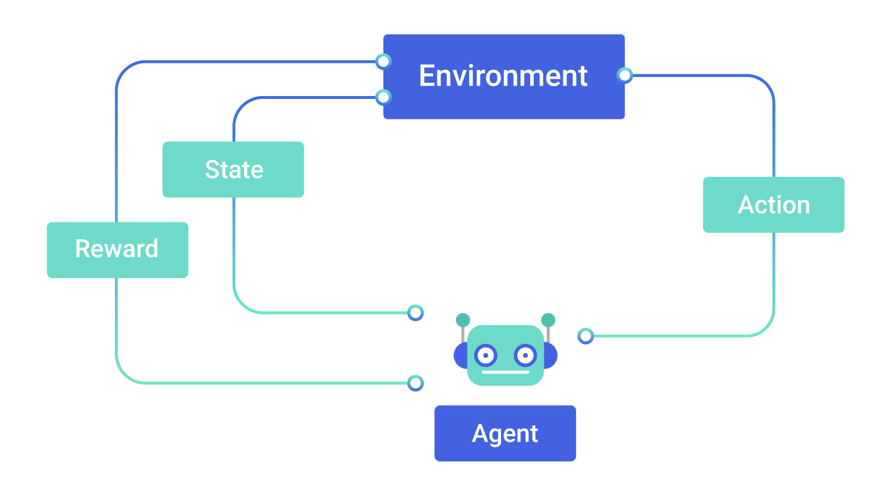
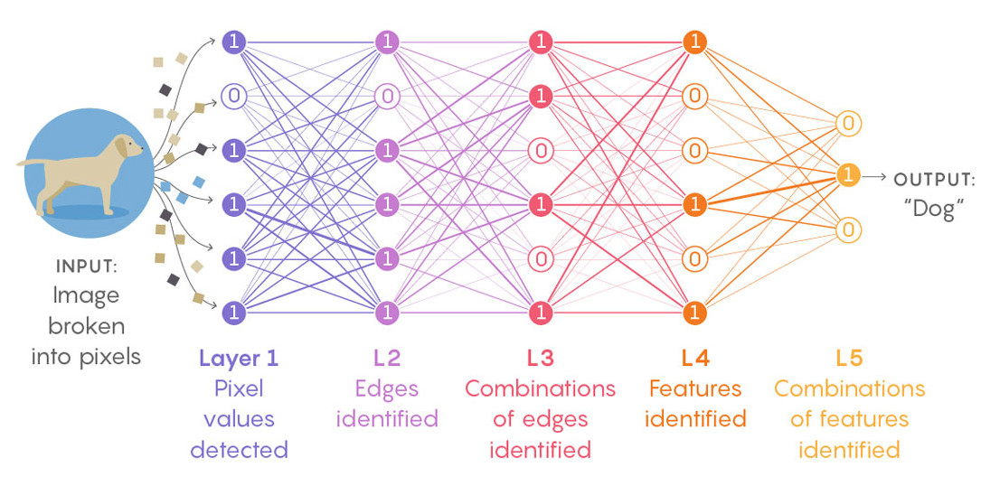

Introductie AI & ML
voor Testers
-
Wat is AI?
-
AI voor testers?
-
Testen van AI?
Wat is AI?
(afkorting van Artificial Intelligence, a.k.a. Kunstmatige Intelligentie)


Wat is een beker?
- Hoe weten we dat?
- Wie heeft ons dat verteld?
- Wie heeft ons dat geleerd?
- Hoe hebben we dat geleerd?
Patronen
Patronen
Patronen

Patronen

Brain-inspired computing
Maar hoe werkt dat dan?
(bij een machine)



Hoe dan?
- Gelijkheid berekenen
- Kans berekenen
- Waarschijnlijkheid berekenen

AI vs ML
- Cognitieve vaardigheden (AI)
-
- Problem solving
- Learning (ML)
- Augmented Intelligence?
Machine Learning
- Geen: OOAD (Object Oriented Analyses and Design)
- Wel: train models
Types Machine Learning
- Supervised learning
- Unsupervised learning
- Reinforcement learning
- Deep learning
ML type: Supervised learning
Input en output zijn gelabeld
ML type: Unsupervised learning
Learning machine + analist
ML type: Reinforcement learning
Regels ipv data
ML type: Deep learning
Neurale netwerken
Uitdagingen van ML
- Data !!!
- Vooroordelen (Bias)
- Uitlegbaarheid
- Compute power (CPU vs GPU)
AI voor testers
(thoughts ...)
Niveaus van AI
(Bartosz blog)
- Niveau 0: No AI
- Niveau 1: AI assistance
- Niveau 2: Partial AI automation
- Niveau 3: Conditional AI automation
- Niveau 4: High AI automation
- Niveau 5: Full AI automation
Testen van AI
(thoughts ...)
Niveaus van AI
(Bartosz blog)
- Niveau 0: No AI
- Niveau 1: AI assistance
- Niveau 2: Partial AI automation
- Niveau 3: Conditional AI automation
- Niveau 4: High AI automation
- Niveau 5: Full AI automation
Considerations
- Data !!!
- Test data?
- Productie data?
- AVG? (privacy en zo ;-)
- Vooroordelen (Bias)
- Geen absolute waarheid, maar waarschijnlijkheid
- Uitlegbaarheid
- Geen absolute waarheid, maar waarschijnlijkheid
- Behavior Driven Development?
- Compute power (CPU vs GPU)
- Doorlooptijd?
- Omgevingen?